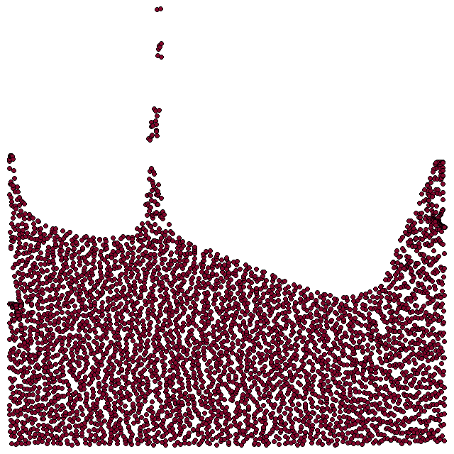
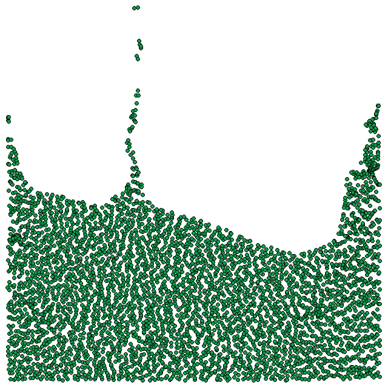
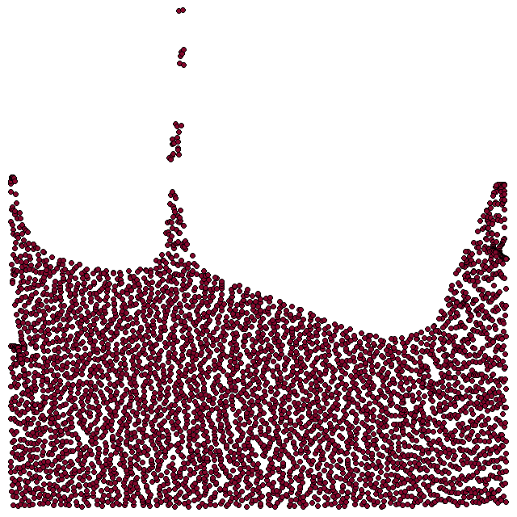
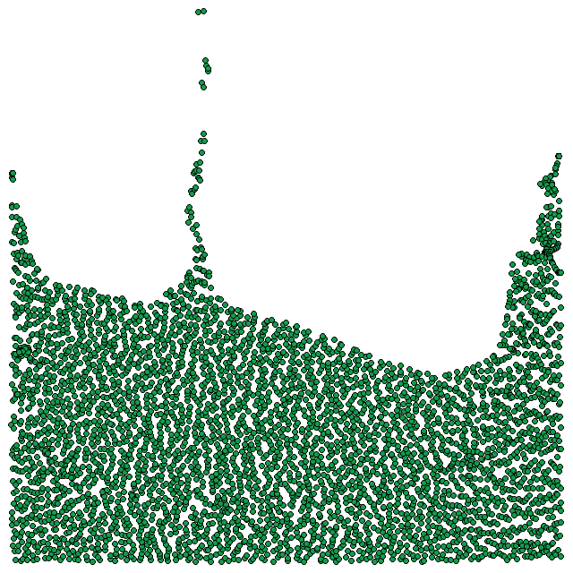

|  |

|
 |
|  |
|
 |
I've always found physical simulation (along with lighting) to be one of the coolest aspects of computer graphics. Maybe its because of the animated movies I watched where effects really seal the deal, helping to inject this feeling of magic into a scene. To that end, I worked on an APIC fluid simulation here which was an extension of the PIC/FLIP fluid simulation originally written by Robert Bridson, and later augmented by Ante Qu. This was my second attempt working on physical simulations (after my failed foray into MPM for snow simulation) so it was pretty cool to learn about the recent developments in the field of fluid simulation.
In any dual Eulerian Lagrangian simulation method in which the simulation medium alters between discrete particles and a grid, there must be a mechanism to transfer between particles to the grid, and of course, from the grid back to the particles. To that end, two popular solvers are particle in cell (PIC) and Fluid Implicit Particles (FLIP), however these have noticeable issues in the particle-grid and grid-particle transfers. As detailed in Jiang et al., the translation from particle to grid serves as a "filtering mechanism" which helps to prevent instability. Unfortunately, this filtering also reduces the amount of data transferred from the particles to the grid, and back from the grid to the particles, most importantly, reducing the amount of angular momentum. FLIP attempts to remedy this issue by allowing certain information to bypass the grid filtering step, and instead transfer directly from particle state to particle state, which helps to preclude dissipation, but as a result, can render the simulation unstable.
A key observation made by Jiang et al. is that when switching from the grid domain to the particle domain, particles garner information from a series of grid nodes, depending on the interpolation kernel chosen, but often times the information collected from the grid nodes is casted into a one dimensional constant, which naturally causes dissipation. Therefore the key to APIC (and RPIC, or Rigid Particle in Cell, another fluid solver that unfortunately falters in the face of shearing) is ensuring information relating to particulate angular momentum is not lost during domain transfers.
Conceptually, APIC follows nicely from RPIC. Jiang et al note that a singular particle is capable of influencing multiple grid nodes, the exact number of which is dependent on the interpolation kernel used. This implies that the grid nodes can encode angular momentum information of that singular particle, however when transferring from grid nodes to particles, traditional PIC does not allow for particles themselves to track angular momentum, thus there is a notable disparity in the information that grids and particles can track. Simply put, RPIC and APIC are just different methods of attempting to bridge the rift between the two domains. In RPIC, particles track a vector of angular momentum and the transfer equations are detailed in section 5.2 of Jiang et al.
RPIC is nice, but imperfect, since any non-rigid motion is poorly represented. Jiang et al. work around this issue "by idealizing the velocity as locally affine on each particle." The goal, in their words switches from preservation of angular momentum, to preservation of affine velocity fields, which as a byproduct preserves angular momentum as well! Instead of an angular velocity vector as in RPIC, APIC particles will self track a matrix which is pivotal to the momentum transfer from particles to grid nodes as detailed in section 5.3 of Jiang et al. There is a lot of math that is far beyond my area of expertise, but is wonderfully documented by Jiang et al. in their paper, and technical report. In essence, RPIC and APIC are able to generate non dissipative fluid models by purposefully tracking additional information in particles (angular velocity vector in RPIC and matrix in APIC). In this way, singular particles can reclaim information that was sent to the grid nodes that would otherwise be lost in PIC, since singular particles in PIC cannot inherently encode angular momentum information.
Here are some comparisons between the PIC solver, FLIP solver, and APIC solver. As Jiang et al. note in the APIC introduction video, the natural vorticity of fluids is encapsulated by APIC solvers, and compared to FLIP, APIC is noticeably more stable during fluid splashes. FLIP and APIC are both more energetic that PIC, which is most likely a byproduct of the fact that PIC is a dissipative fluid model. Simulation data was later exported and rendered to frames using Python with Pygame, and further spliced into short animations with OpenCV.
There are a couple of additions I would like to make to this project, perhaps in the future. The most important of which is fully digesting the mathematics that drives the APIC fluid simulation. While I understand the general principles and goals of APIC, I need to spend more time carefully dissecting the literature to convince myself fully of the mathematical basis. I would also love to convert this to a 3D fluid solver as well, which should be relatively simple to do, given I would only need to update a couple of data structures, the interpolation kernel (to the trilinear interpolation kernel), and any dimensionally specific implementation. Finally it would be nice to re-mesh the particles to create a better looking fluid simulation composed of a cohesive mesh rather than a series of particles.